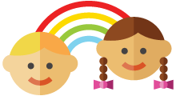

About Us
All children learn at their own pace!
At Rainbow Preschool e.V. the individual approach already starts on the first day! Our team of educators has extensive experience and assesses the individual needs of each child. They pay close attention not to overwhelm the children. At the same time they offer more advanced lessons when the child is ready.
Every child should have the opportunity to adjust very gently to the new environment. This could sometimes take up to several weeks. Your child will be attending our full-time only once they are fully settled.
Rainbow Preschool e.V. provides the children with a wide range of tasks. Daily life experience plays a major role. The children use real objects from everyday life instead of only using plastic objects. Even our little ones learn to pour liquids from glass bottles or jugs. They use china plates and standard cutlery for meals, not plastic. Occasionally they bake and cook for their friends with the help of a teacher in the kitchen. They set the table for their Rainbow friends, water the flowers or practice to clean windows.
“Our hands help others and do not hurt”
Children take responsibility for the materials used. As a result they learn to treat others and their environment respectfully. Each material is available only once. They must work together or wait until it is their turn. Before the children move on to a new activity, they need to tidy up.
In Rainbow Preschool e.V. about half of the children speak English as their mother tongue, the other half mostly German. Depending on their individual needs, our professionals speak English or German with the children. Overall, our children develop a good sense of language and are very open to other cultures.
At the same time, they experience the German language consciously. Due to the constant change between the languages, they discover the differences and similarities in them.
Rainbow Preschool e.V. supports the international exchange of ideas. Parents can take part and enrich Rainbow Preschool with their own culture, tradition and religion. This includes guest lectures of parents, practical activities and discussions. Above all, we celebrate various traditional festivals!
Thus every year children, parents, and the educators team look forward not only to Oktoberfest, St. Martin’s Day, Christmas, or Easter but also to the Indian festival of lights Diwali, the Chinese New Year, Thanksgiving and Halloween among others.